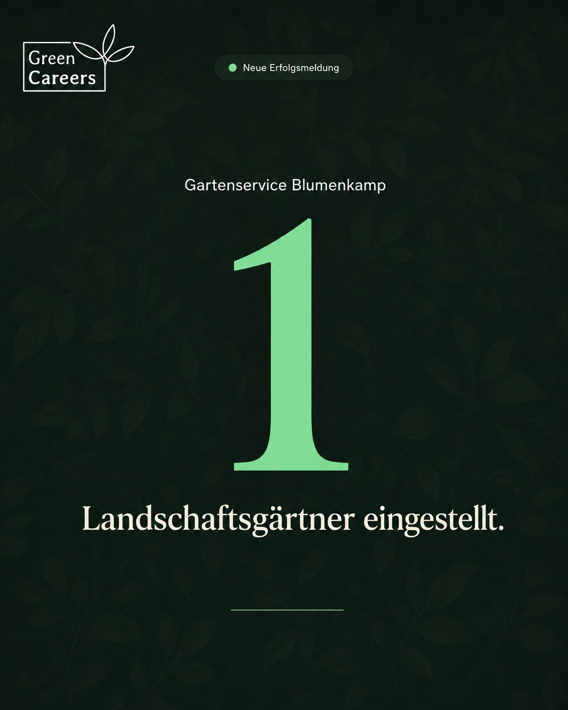

#1
Mi 26.08.2026 · 18:00 UhrEinzelbild
Ein Landschaftsgärtner mehr bei Gartenservice Blumenkamp. Der Job dahinter ist der, den die meisten meinen, wenn sie GaLaBau sagen: Boden abtragen, Frostschutzschicht einbauen, verdichten, Pflaster setzen – und dabei die zwei Prozent Gefälle treffen, die später darüber entscheiden, ob das Wasser abläuft oder auf der Terrasse steht. Drei Jahre Ausbildung. Danach kannst du dir in dieser Branche aussuchen, wo du arbeitest: 19.898 Betriebe, 131.746 Beschäftigte – so viele wie nie. Guten Start. 🌱 Quelle: BGL-Branchenstatistik 2025 green-careers.de #galabau #landschaftsgärtner #greencareers
Erst-Kommentare
- Wer soll hier als Nächstes stehen? 😉